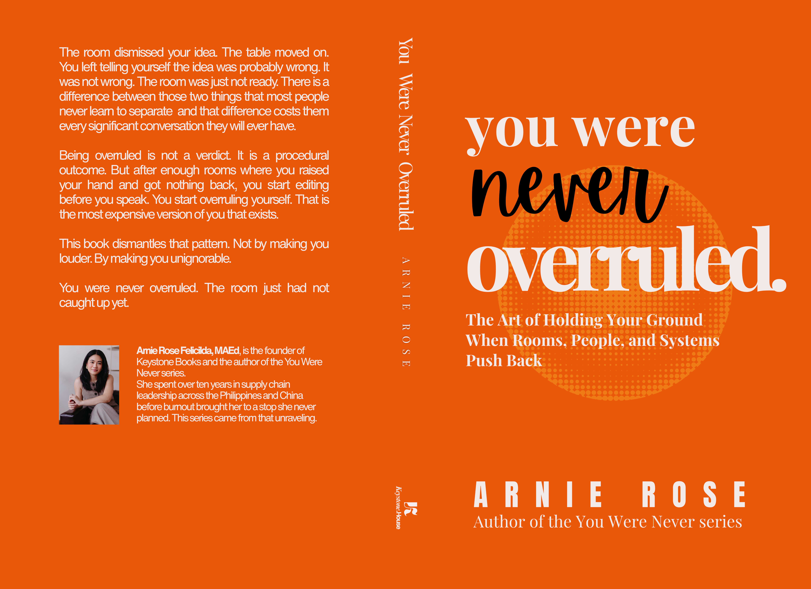

The Complete Series
Six books. Six lies. One correction each.
Reflect
"When did you first decide you were behind?"
"Whose timeline are you actually racing?"
"What would you do differently if you stopped comparing?"
"If no one could see your progress, would you still keep going?"

The First Lie
Book 01 of 06
You Were Never Behind
Stop Measuring Your Life Against a Timeline That Was Never Yours.
"You work harder than most people around you. And still, they move faster."
Book Preview
You have been measuring a real life against a curated fiction and calling the distance failure. The timeline you are racing was never yours. This book will not make you feel better. It will make you see clearly.
Inside this book
- You Compare Yourself to People Who Don't Know You Exist
- You're Chasing a Timeline That Was Never Yours
- You Keep Saying Yes So You Feel Needed
- You Keep Waiting for Someone to Tell You You're Enough
- You Keep Skipping the Hard Part
- You Call It Doubt, But It's Avoidance
- Your Pace Isn't the Problem. Your Choices Are.
Reflect
"What is the one thing you keep doing that produces the least result?"
"Who are you proving yourself to? And do they even notice?"
"What would you stop doing if effort alone was no longer the measure?"
"Where have you been working hard in the wrong direction?"

The Second Lie
Book 02 of 06
You Were Never Ordinary
The Hidden Advantage You Already Have and How to Finally Use It.
"You have been working harder than almost everyone around you. The results do not match the effort."
Book Preview
The problem was never your effort. It was your placement. Capable people spend years applying real effort in the wrong direction and calling it discipline.
Inside this book
- You Were Working Hard. The Work Was in the Wrong Place.
- One Change in the Right Place Moved Three Weeks of Work.
- You React Before You Have a Chance to Decide.
- The Ceiling You Built Before You Knew It.
- You Know What to Do. You Do Something Else Instead.
- You Are Proving Yourself to People Who Already Decided.
- You Were Never Missing the Skill. You Were Missing the Combination.
Reflect
"When did you start making yourself smaller in a room?"
"What would it look like to be clearly expressed instead of just present?"
"Who has been seen consistently that you want to learn from?"
"What would change if the right people finally noticed you?"

The Third Lie
Book 03 of 06
You Were Never Invisible
Fix the Signal. Not the Worth.
"You were not invisible. You were never recognized. Those are different problems."
Book Preview
Recognition is not random. The people who get consistently seen are the most clearly expressed. You were showing up. The room just was not registering the signal correctly.
Inside this book
- You Were Never Invisible. You Were Never Recognized.
- Being Loud Gets Attention. Being Clear Gets Remembered.
- You Have Been Muting the Signal Without Knowing It.
- The Room Responds to Clarity, Not to Effort.
- You Have Been Waiting to Be Discovered Instead of Expressed.
Reflect
"Where have you been making yourself available at a cost you do not talk about?"
"What are you afraid will happen if you say no?"
"Who benefits most from your consistency? Is it mutual?"
"What would you stop doing if you no longer feared being replaced?"

The Fourth Lie
Book 04 of 06
You Were Never Dispensable
Stop Performing. Start Building.
"The fear of being replaced is making you perform instead of build."
Book Preview
You have been making yourself needed in ways that exhaust you. That is not indispensability. That is performance. The mask works until it does not.
Inside this book
- You Have Been Performing Steadiness While Carrying Weight No One Sees.
- The Fear of Being Replaced Is the Trap, Not the Reality.
- You Said Yes Again Because You Were Afraid of What No Would Cost.
- You Were Never Dispensable. You Were Just Not Yet Built Right.
Reflect
"When did you last push back on something that mattered?"
"Where do you edit yourself before you even speak?"
"What would you say if you were certain you would not be dismissed?"
"Who are you smaller around? And why?"

The Fifth Lie
Book 05 of 06
You Were Never Overruled
Hold Your Ground in Any Room.
"You started overruling yourself before anyone else got the chance."
Book Preview
Being overruled is a procedural outcome. It is not a verdict on the idea. You enter the room already smaller than you need to be. That is a pattern, not a fact.
Inside this book
- You Were Never Overruled. You Overruled Yourself First.
- The Room Dismissed Your Idea. The Idea Was Not Wrong.
- You Started Editing Before You Spoke.
- The Pattern That Keeps You Small in Every Room.
- How to Hold Your Ground Without Burning It Down.
Reflect
"What have you stayed quiet about that cost you something?"
"Which conversations do you rehearse but never have?"
"What would you say if you were certain the other person could handle it?"
"Where have you watched your idea become someone else's sentence?"

The Sixth Lie
Book 06 of 06
You Were Never Mute
Say What You Keep Not Saying.
"The words were there. You just did not spend them."
Book Preview
You were never mute. You were just walking into every conversation unarmed. Not anymore. The right words placed correctly change every conversation.
Inside this book
- You Stayed Quiet When You Had the Answer.
- You Rehearse Conversations More Than You Actually Have Them.
- You Said Yes Because You Were Afraid of Being Seen as Difficult.
- You Watched Your Idea Become Someone Else's Sentence.
- 55 Conversations You Keep Avoiding. How to Have Them.